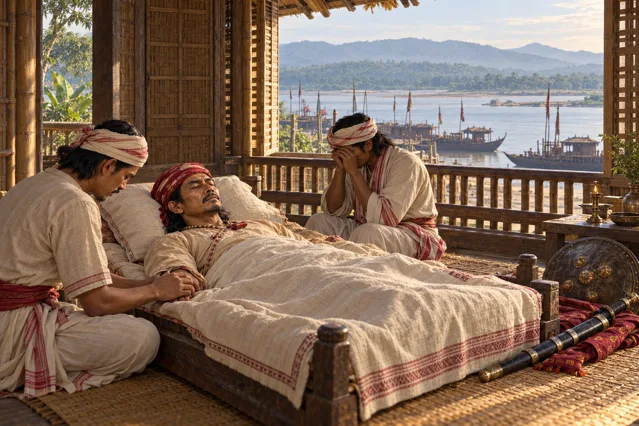
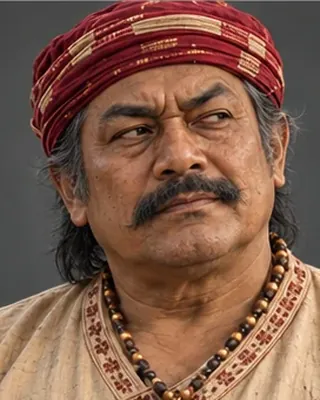

April 1672
Borphukan 1672–1677; d. 1680 · Borphukan

Elder brother of Lachit; succeeded him as Borphukan. Handed Guwahati to the Mughals in 1679 and was assassinated by his bodyguard in 1680.
Wikipedia dates his tenure 1672–1677 and his death 1680.
Record confidence: medium.